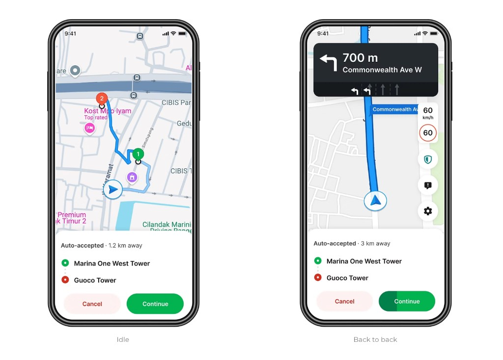
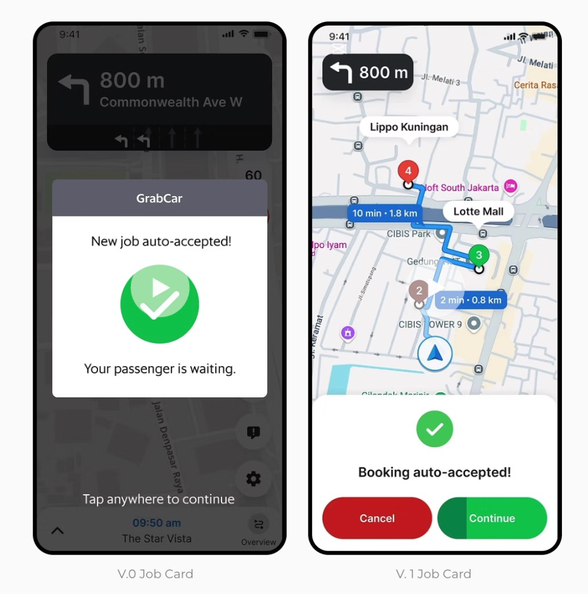
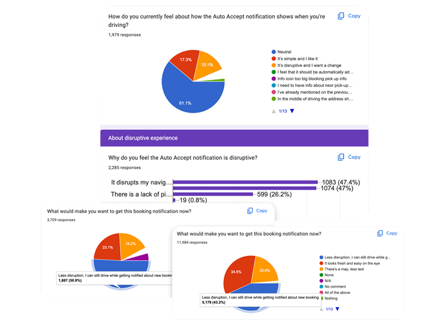
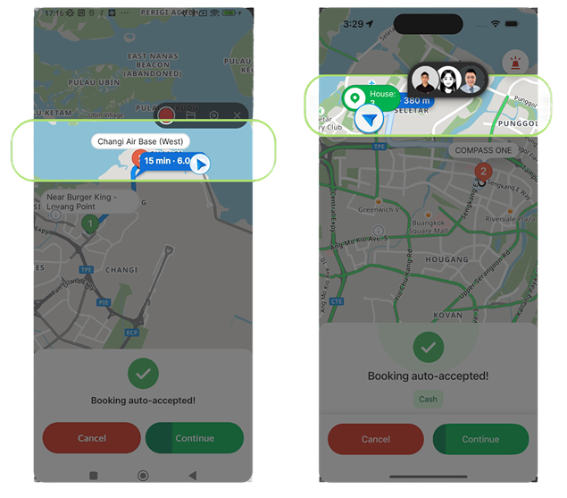
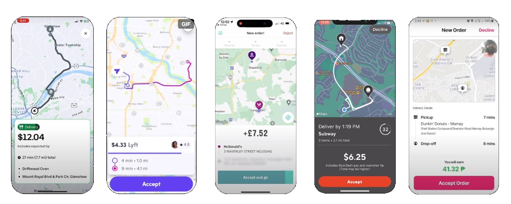
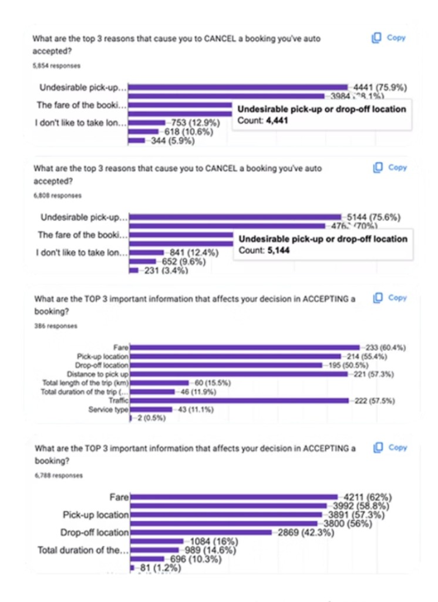
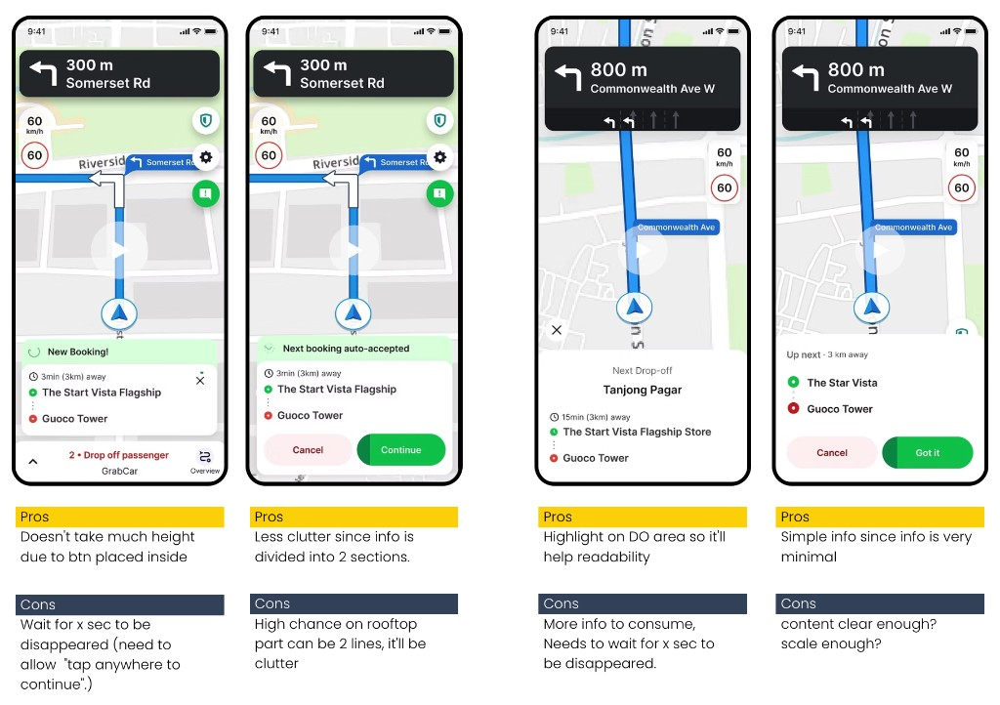
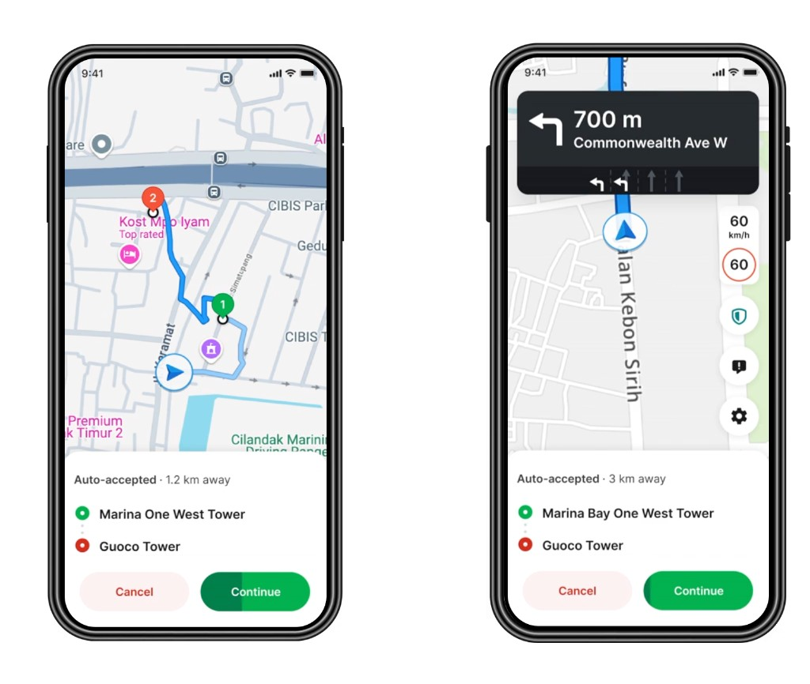

Grab
Non-disruptive Job Card v.2
Streamlined Safer, Disruption-Free v.2 Job Card

Product platform
Grab Driver app
My role
- Product design
- Problem solve
- Interactive prototyping
- User research & testing
- Stakeholder management
Background
From V.0 to V.1
The idea to revamp the job card came from wanting to let drivers cancel early. Drivers currently tend to cancel late, with an average time to cancel of 4.6 minutes, which wastes time for both drivers and passengers. This leads to two main issues:
- Loss of supply: More rides could have been fulfilled during wasted online hours. Metric: # of completed rides.
- Loss of demand: Passengers wait too long, don’t get assigned a driver, or drivers ask passengers to cancel (DIPC), causing churn. Metric: Time to Effective Allocation (TTEA).
How it benefits us?
Early cancellations are generally less harmful than late ones. Specific effects we aimed for:
- Time saved for the job → More reallocation attempts → FR +0.13pp
- Less driver wasted time → More rides fulfilled → FR +0.18pp
- Reduction in driver-induced passenger cancels (DIPC) → More reallocation opportunities → FR↑
- More booking-level driver cancels → Stronger signals for progressive re-pricing → FR↑
Learning from first experiment of V.1
In Q1 2024, V.1 introduced a new early upfront cancellation feature, piloted in Alor Setar, Malaysia. It encouraged drivers to cancel within 8 seconds, leading to several positive outcomes:
- 35% of cancellations were early cancels
- 30% reduction in cancellation time
- 4.16 pp increase in Fulfilment Rate
- 26% decrease in TTEA — a new driver was found much faster after a cancellation
While time to cancel declined, more robust incentives are still necessary to drive earlier cancellations — promising results, with room to optimise further.

General Sentiment Feedback (SG & PH)
Problem
“Suddenly I blinked, I don’t know where to turn in an unfamiliar neighborhood for drop-off. And when distances are big for the next job and the map zooms out, it doesn’t help us anticipate plan in advance how to go to the next job pickup location.”
— ET
“We just tap screen chase the popup away cuz we still have our navigation.”
— SG driver
Survey insights
- Less disruption: About 43–51% of drivers (across samples) chose options about staying focused on driving while still getting booking notifications.
- Visual preference: Many noted a fresher UI and more map, less text.
- Auto Accept today: Roughly 61% neutral; about 15% wanted a change because it felt disruptive.
- Why disruptive: Interfering with navigation (~47%) and lack of pickup information (~47%) were the dominant themes.

Problem
Drivers found the new B2BJ card hijacking, disruptive, and frustrating, despite the Fast Cancel feature working well for early cancellations.
Ground issue
On top of that problem, I’ve cross-checked with QAs that the zoomed-out navigation view and job card in production obstruct the current drop-off screen, causing disruption.
There are several elements that frequently overlap, making it difficult to view all information, especially for B2B trips with one pickup and two drop-offs. Overlapping items include:
- Blue arrow showing driver location
- Pickup and drop-off pins
- Pickup and drop-off info bubbles
- Blue time and distance bubble
- District name

Proposed solution
Revamp V.1 into a streamlined, safer, and disruptive-free V.2 design that provides critical details to enable early cancellations.
Ensure cancellations on the Job Card still happen quickly, ideally within the first 8 seconds, to minimize network harm from cherry-picking.
- Provide a clear and concise Job Card with essential information, avoiding cognitive overload, so drivers can make a fast, fuss-free decision to continue or cancel with a single click.
- Provide free cancellations early to encourage drivers to shift their current habits. Apply quotas strategically to limit excessive cherry-picking within the first 8 seconds of job allocation without affecting their cancellation rate. (Interviews revealed that drivers use the Help Centre or chatbot to avoid penalties.)
Research
Benchmarks from Uber Delivery, Lyft, Deliveroo, DoorDash, Foodpanda. All of them commonly placed the cancel button away from easy reach, but since hiding the cancel button doesn’t align with our goals, we only took note of this and focused on other areas. They all displayed pickup and drop-off information in various ways. Since the map feature we tried in back-to-back jobs (B2BJ) received negative feedback, we plan to revise this by showing the information directly on the job card instead.

Survey
To support easier decision-making, we identified which key job details matter most through surveys in SG and PH:
- Fast Cancel and Continue options
- Pickup and drop-off locations
- Distance to pickup
- Fare (shown only for manually accepted jobs)
We highlighted critical info for readability at a glance. Excessive information reduces reading time and can increase accident risk — so we prioritised the most essential details on the job card.

Design principles
Minimize disruptive job arrival
Avoid hijacking the screen; preserve the current navigation view when a job arrives so DAX never misses a turn.
Non-map interference mode
Keep turn-by-turn visible, with no zooming in/out on incoming jobs. The map continues showing the current route while job details appear in a compact card overlay.
Peek card interaction
A small, non-intrusive job panel for quick viewing.
Clear, at-a-glance readability
Compact layout with only must-know information, reducing cognitive load and accident risk — drivers need to read within ~8 seconds.
Essential info-only mode
Show pickup/drop-off POI rather than total distance for decision-making.
From UT
Taxi type, while the only distinguishing element in V.0, is not a top priority in job selection.
Exploration

Design

Implementation
Followed these core design principles:
- Scalable solution that works for both idle and in-transit states.
- Consistent and clear naming across the experience to reduce cognitive load.
- Decide necessity and detail level of info — e.g. addresses, distance, time, copy, CTAs.
To boost visual emphasis and hierarchy, I contributed the Secondary Alert Button to the Design System, aligned with usability testing. POI content was streamlined for quick scanning — readable within 8 seconds. Displaying both PU and DO POIs proved more useful than total distance, which we omitted due to technical constraints. To preserve map visibility, we avoided long headings and arranged elements to highlight essential details without disrupting navigation — a clear yet unobtrusive in-transit experience.
Impact
It resulted in a win-win-win situation. In Jun’24, we ran our first LCEs in several OTCs in MY & ID. We garnered positive driver feedback as this feature gives them agency, while also improving network reliability and passenger experience.
We pushed for global optimization and achieved regional rollout within just 4 months:
- Fully rolled out in ID, TH, PH, VN, MM, KH
- Rolled out for ~40% DAXs in MY (opted into Eagle)
- Pilot testing on 30% DAXs in SG
Results
Improved on network reliability
- Estimated regional FR uplift of ~0.11pp, up to +0.88pp in major cities like BKK
.144k
additional monthly completed rides
Improved allocation experience
28%
reduction in DIPC
In Time to Effective Allocation
Up to 8 sec. reduction.
(Regionally, with 37% DAX cancellations shifting to the first 8 seconds)
Agency + positive sentiments
“I like this even without seeing the price. At least I can choose to cancel jobs I don’t want based on location without blocking my view. It’s better than being forced to accept whatever comes and then getting penalized for cancelling.”
— Ray Lim, driver
What I learned
The project went through several rounds of brainstorming and planning with stakeholders. Although the final solution seems simple and straightforward, the journey to reach it was intricate. We had to carefully choose what to display and align on technical feasibility. Our established job card originally gave drivers no choices — so introducing accept or cancel on a “disruption-free” card meant working closely with Geography, Fulfillment product, and engineering to find the most feasible yet best experience.
This project directly impacted passengers and drivers. It deepened my empathy for driver safety and pushed me to gather feedback from drivers at hawker centres and through surveys in other countries — a rewarding experience as a designer.
Next, we’ll carefully add information drivers want most (such as total distance), but as gatekeepers we must choose what to surface next.
Team
This project was made possible with the combined effort from:
- PM: Tze Teng Lim, Yong Cheng Ho
- Designer: Hayeon Kim
- Content: Amadea Ng
- Analytics: Xuejing Song, Sutong Yao, Raghav Garg, Huicong Guo
- BOs: Jiazheng Yong, Sherry Li, Kimberly Lim, Jianyong Oh
- PMM: Jennwei Hee
- Engineers: Edgar Fojas, Siyuan Cheng, Zijian Tang, Boon Joon Tan, Amri MC, Faraz Khan, Echo Zhangjie
- QA: Ahnaf Aziz
- PMM: Isabel Martin
- Country PICs: Huilin Ng, Wanteng Wong, Jianpang Koh, Pingyuen Lee, Alicia Neo, Mahfudz Yasin, Jovian Onggowinarso, Alvin Goputra, Onnicha Ka, Kant Ch, Phuong Nguyentruc, Thien Khuu, Linh Lekhanh, Norman Coquia, Clarize Morito, Sothy Puy, Tinaye Nyein, Hsu Yee Phyo, Wai Phyo and many others!
- Leadership: Zhikang Wong, Prashant Kumar, Yaohui Li
Thanks to the heroes behind this!